深圳大学计算机系统(3)实验 Chisel语言设计 chisel的视频学习可以看这里：Chisel数字系统设计基础
1、环境安装 本次实验需要用到chisel环境进行电路设计以及测试，并生成vcd信号文件，同时还需要在linux虚拟机中安装gtkwave软件来显示vcd信号文件的信号。
1.1 chisel环境安装 chisel环境安装这里提供两种方法。
方法一：按照课件ppt中的安装流程在linux虚拟机中进行配置
注意：使用sbt下载的时候如果出现下载非常慢或卡死的状态可能需要换源
方法二：使用JB家的IDEA可以直接安装和配置scala以及chisel的环境，这里不多赘述，可以直接在windows系统中编写程序和运行，仅需要将生成的vcd文件复制到虚拟机中用gtkwave打开即可。
1.2 安装gtkwave 1 sudo apt-get install gtkwave
2、电路设计 2.1 译码电路设计 1 2 3 4 5 6 7 8 9 10 11 12 13 14 15 16 17 18 19 20 21 22 23 24 25 26 27 28 29 30 31 32 33 34 35 36 37 38 39 40 41 42 43 44 45 46 47 48 49 50 51 52 53 54 55 56 57 import chisel3._import chisel3.util._class MIPSInstructionDecoder extends Module val io = IO (new Bundle { val instr_word = Input (UInt (32. W )) val add_op = Output (Bool ()) val sub_op = Output (Bool ()) val lw_op = Output (Bool ()) val sw_op = Output (Bool ()) val nop = Output (Bool ()) val Reg1 = Output (UInt (5. W )) val Reg2 = Output (UInt (5. W )) val Reg3 = Output (UInt (5. W )) }) val opcode = io.instr_word(31 , 26 ) val funinfo = io.instr_word(5 , 0 ) io.add_op := false .B ; io.sub_op := false .B ; io.lw_op := false .B ; io.sw_op := false .B ; io.nop := false .B ; io.Reg3 := io.instr_word(25 ,21 ) io.Reg1 := io.instr_word(20 ,16 ) io.Reg2 := io.instr_word(15 ,11 ) when(opcode === "b000000" .U ) { when(funinfo === "b100000" .U ) { io.add_op := true .B ; } .elsewhen(funinfo === "b100010" .U ) { io.sub_op := true .B ; } } .elsewhen(opcode === "b100011" .U ) { io.lw_op := true .B ; } .elsewhen(opcode === "b101011" .U ) { io.sw_op := true .B ; } .otherwise { io.nop := true .B ; } } object MIPSInstructionDecoder extends App (new chisel3.stage.ChiselStage ).emitVerilog(new MIPSInstructionDecoder (), Array ("--target-dir" ,"generated" )) }
创建IO，其中输入为32位指令，下面五个bool信号为五种类型指令的鉴别信号，同时根据输入的指令解析出其中对应的寄存器编号（如有）。
Opcode为指令前6位，funinfo为指令后6位，add和sub指令的前6位均为0，因此需要靠后6位来区分。首先初始化五种指令，然后根据指令内容进行译码。
测试代码：
1 2 3 4 5 6 7 8 9 10 11 12 13 14 15 16 17 18 19 20 21 22 23 24 25 26 27 28 29 30 31 32 33 34 35 36 37 38 39 40 41 42 43 44 45 46 47 48 49 50 51 52 53 54 55 56 import org.scalatest.flatspec.AnyFlatSpec import chisel3._import chiseltest._class MIPSInstructionDecoderSpec extends AnyFlatSpec with ChiselScalatestTester behavior of "MIPSInstructionDecoder" it should "TestInstructions" in { test(new MIPSInstructionDecoder ).withAnnotations(Seq (WriteVcdAnnotation )) { c => c.io.instr_word.poke("b00000000001000100001100000100000" .U ) c.clock.step(1 ) c.io.add_op.expect(true .B ) c.io.sub_op.expect(false .B ) c.io.lw_op.expect(false .B ) c.io.sw_op.expect(false .B ) c.io.nop.expect(false .B ) c.io.instr_word.poke("b00000000000001010011000000100010" .U ) c.clock.step(1 ) c.io.add_op.expect(false .B ) c.io.sub_op.expect(true .B ) c.io.lw_op.expect(false .B ) c.io.sw_op.expect(false .B ) c.io.nop.expect(false .B ) c.io.instr_word.poke("b10001100101000100000000001100100" .U ) c.clock.step(1 ) c.io.add_op.expect(false .B ) c.io.sub_op.expect(false .B ) c.io.lw_op.expect(true .B ) c.io.sw_op.expect(false .B ) c.io.nop.expect(false .B ) c.io.instr_word.poke("b10101100101000100000000001101000" .U ) c.clock.step(1 ) c.io.add_op.expect(false .B ) c.io.sub_op.expect(false .B ) c.io.lw_op.expect(false .B ) c.io.sw_op.expect(true .B ) c.io.nop.expect(false .B ) c.io.instr_word.poke("b00001100000000000000000001100100" .U ) c.clock.step(1 ) c.io.add_op.expect(false .B ) c.io.sub_op.expect(false .B ) c.io.lw_op.expect(false .B ) c.io.sw_op.expect(false .B ) c.io.nop.expect(true .B ) } } }
共执行5个时钟周期，依次向instr_word输入add R1,R2,R3; sub R0,R5,R6，lw R5,100(R2), sw R5,104(R2)、JAL 100指令的数据，并进行检验。
测试结果：
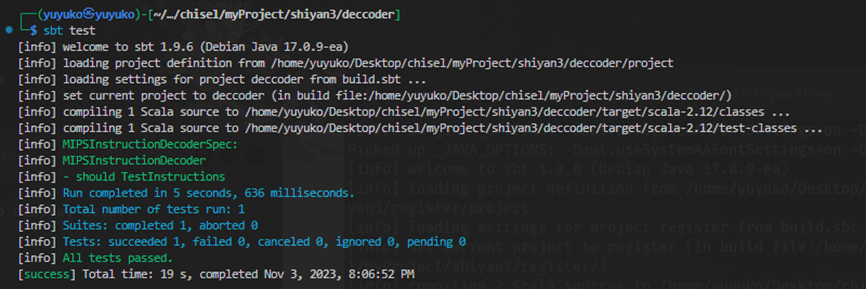
观察波形：
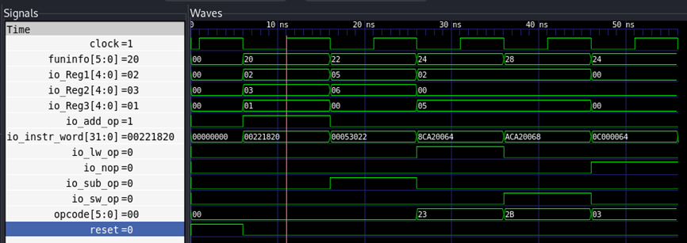
第一个时钟周期过后，instr_word内容更改为add R1,R2,R3;对应的32位数据，opcode为0，funinfo为0x20，add_op为1，说明正确译码。
后面的几个时钟周期结果与上面类似，这里不作展示。
2.2 寄存器文件电路设计 1 2 3 4 5 6 7 8 9 10 11 12 13 14 15 16 17 18 19 20 21 22 23 24 25 26 27 28 29 30 31 32 import chisel3._import chisel3.util._import chisel3.stage.ChiselStage class RegisterFile extends Module val io = IO (new Bundle { val RS1 = Input (UInt (5. W )) val RS2 = Input (UInt (5. W )) val WB_data = Input (UInt (32. W )) val Reg_WB = Input (UInt (5. W )) val RS1_out = Output (UInt (32. W )) val RS2_out = Output (UInt (32. W )) }) val registers = RegInit (VecInit ((0 until 32 ).map(_.U (32. W )))) io.RS1_out := registers(io.RS1 ) io.RS2_out := registers(io.RS2 ) when(io.Reg_WB =/= 0. U ) { registers(io.Reg_WB ) := io.WB_data } .otherwise { registers(io.Reg_WB ) := registers(io.Reg_WB ) } } object RegisterFileMain extends App (new ChiselStage ).emitVerilog(new RegisterFile , Array ("--target-dir" , "generated" )) }
IO信号中，定义RS1，RS2，WB_data,Reg_WB输入，RS1_out, RS2_out两个输出。
定义一组32个寄存器，使用循环为寄存器附上初值，初始值内容为其编号。
根据上面的图，RS1_out和RS2_out分别对应编号为RS1寄存器的内容和编号为RS2寄存器的内容，同时，WB_data将会被写入到编号为Reg_WB的寄存器中，这就是两读一写的功能。根据真实的regfile，还应有一个写使位用于控制寄存器是否写入，由于上图中没有，因此这里默认WB寄存器可写。
此外，特别地，由于0号寄存器的值恒为0，因此在进行寄存器修改操作的时候若涉及到0寄存器则不对其做任何改动。
测试代码：
1 2 3 4 5 6 7 8 9 10 11 12 13 14 15 16 17 18 19 20 21 22 23 24 25 26 27 28 29 30 31 32 33 34 35 36 37 import org.scalatest.flatspec.AnyFlatSpec import chisel3._import chiseltest._class RegisterFileSpec extends AnyFlatSpec with ChiselScalatestTester behavior of "RegisterFile" it should "correctly read and write registers" in { test(new RegisterFile ).withAnnotations(Seq (WriteVcdAnnotation )) { c => c.io.RS1 .poke(5. U ) c.io.RS2 .poke(8. U ) c.io.WB_data .poke(0x1234 .U ) c.io.Reg_WB .poke(1. U ) c.clock.step() c.io.RS1_out .expect(5. U (32. W )) c.io.RS2_out .expect(8. U (32. W )) c.io.RS1 .poke(1. U ) c.io.RS2 .poke(0. U ) c.io.WB_data .poke(0x1234 .U ) c.io.Reg_WB .poke(0. U ) c.clock.step() c.io.RS1_out .expect(0x1234 .U (32. W )) c.io.RS2_out .expect(0. U (32. W )) c.io.RS1 .poke(0. U ) c.io.RS2 .poke(8. U ) c.io.WB_data .poke(0x1234 .U ) c.io.Reg_WB .poke(1. U ) c.clock.step() c.io.RS1_out .expect(0. U (32. W )) c.io.RS2_out .expect(8. U (32. W )) } } }
测试结果：
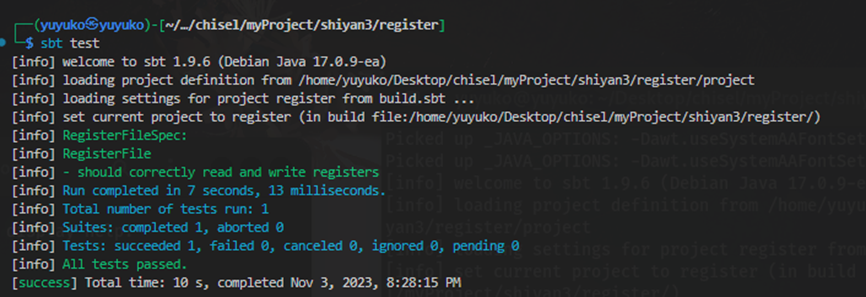
观察波形：
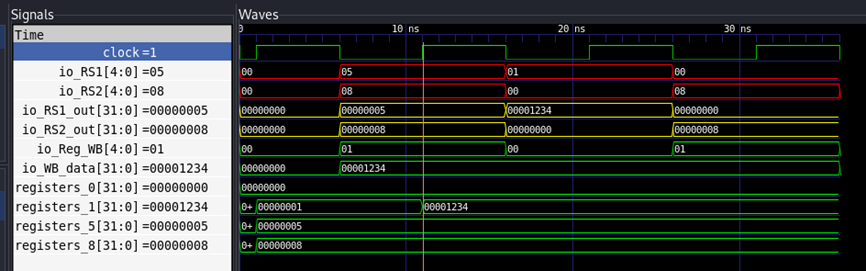
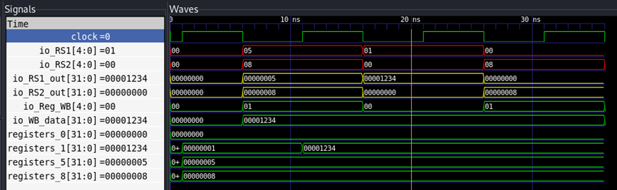
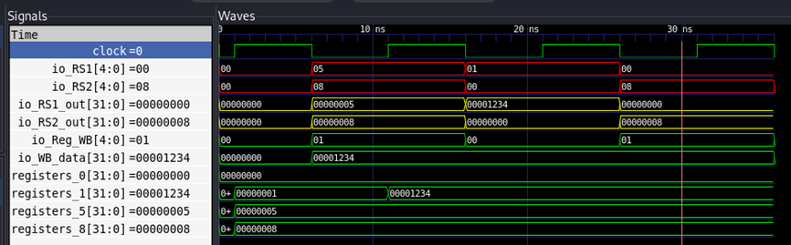
使用三个时间周期进行验证，第一个时钟周期，输入RS1=5，RS2=8，WB_data=0x1234，Reg_WB=1，按照上面的设计，此时应当输出RS1_out=5,RS2_out=8.
第二个时钟周期，输入RS1=1,RS2=0，WB_data=0x1234，Reg_WB=0。在上一个时间周期中，上一个WB_data，即0x1234应已被写入到1号寄存器中，此时的RS1_out=0x1234，RS2_out=0。
第三个时间周期，输入RS1=0，RS2=8, WB_data=0x1234，Reg_WB=1。在上一个时间周期中，Reg_WB输入为0，WB_data=0x1234，由于0寄存器任何时候都为0，因此不会对0寄存器的值进行修改。此时RS1_out=0,RS2_out=8。
根据上图波形，可以验证测试结果均正确。
2.3 pc指令寄存器电路设计 设计Instruction取指令部件：
1 2 3 4 5 6 7 8 9 10 11 12 13 14 15 class InstructionStorage extends Module val io = IO (new Bundle { val Instruction = Output (UInt (32. W )) val pc = Input (UInt (32. W )) }) val Instructions = RegInit (Reg (Vec (16 , UInt (32. W )))) Instructions (0 ) := "b00000000001000100001100000100000" .U Instructions (4 ) := "b00000000000001010011000000100010" .U Instructions (8 ) := "b10001100101000100000000001100100" .U Instructions (12 ) := "b10101100101000100000000001101000" .U io.Instruction := Instructions (io.pc) }
IO信号中定义输入为pc，输出为对应的指令。使用RegInit预存四个指令，依次为add R1,R2,R3; sub R0,R5,R6，lw R5,100(R2), sw R5,104(R2)的32位二进制数据，指令之间间隔4位，对应pc每次+4的操作。
2.4 集合三个部件 1 2 3 4 5 6 7 8 9 10 11 12 13 14 15 16 17 18 19 20 21 22 23 24 25 26 27 28 29 30 31 32 33 34 35 36 37 38 39 40 41 42 43 44 45 46 import chisel3._import chisel3.util._import chisel3.stage.ChiselStage class PC extends Module val io = IO (new Bundle { val pc = Input (UInt (32. W )) val RS1_out = Output (UInt (32. W )) val RS2_out = Output (UInt (32. W )) val add_op = Output (Bool ()) val sub_op = Output (Bool ()) val lw_op = Output (Bool ()) val sw_op = Output (Bool ()) val nop = Output (Bool ()) val nowins = Output (UInt (32. W )) }) val InstructionDecoder = Module (new MIPSInstructionDecoder ()) val Register = Module (new RegisterFile ()) val InstructionStorage = Module (new InstructionStorage ()) this .io.nowins := InstructionDecoder .io.instr_word InstructionDecoder .io.instr_word := InstructionStorage .io.Instruction Register .io.RS1 := InstructionDecoder .io.Reg1 Register .io.RS2 := InstructionDecoder .io.Reg2 Register .io.WB_data := 0. U Register .io.Reg_WB := 0. U InstructionStorage .io.pc := this .io.pc this .io.RS1_out := Register .io.RS1_out this .io.RS2_out := Register .io.RS2_out this .io.add_op := InstructionDecoder .io.add_op this .io.sub_op := InstructionDecoder .io.sub_op this .io.lw_op := InstructionDecoder .io.lw_op this .io.sw_op := InstructionDecoder .io.sw_op this .io.nop := InstructionDecoder .io.nop } object PC extends App (new chisel3.stage.ChiselStage ).emitVerilog(new PC (), Array ("--target-dir" , "generated" )) }
PC的IO信号中，输入为初始pc值，输出有RS1_out, RS2_out, 五种指令的检验位，还有一个从取指令器输出中外接的一个nowins，用于查看当前指令的值，便于检查是否出错。
首先创建3个部件的实例，然后将三个部件之间以及PC和三个部件的输入输出接口对应连接起来。
测试代码：
1 2 3 4 5 6 7 8 9 10 11 12 13 14 15 16 17 18 19 20 21 22 23 24 25 26 27 28 29 30 31 32 33 34 35 36 37 38 39 40 41 42 import org.scalatest.flatspec.AnyFlatSpec import chisel3._import chiseltest._class PCTest extends AnyFlatSpec with ChiselScalatestTester behavior of "PC" it should "pass" in { test(new PC ).withAnnotations(Seq (WriteVcdAnnotation )) { c => c.io.pc.poke(0. U ) c.clock.step() for (i <- 0 until 4 ) { c.io.pc.poke((4 *i).U ) println("Now pc: " + 4 *i) println("Now instruction is: " + c.io.nowins.peek().toString) println("RS1_out is: " + c.io.RS1_out .peek().toString) println("RS2_out is： " + c.io.RS2_out .peek().toString) println("add status: " + c.io.add_op.peek().toString) println("sub status: " + c.io.sub_op.peek().toString) println("lw status: " + c.io.lw_op.peek().toString) println("sw status: " + c.io.sw_op.peek().toString) println("nop status: " + c.io.nop.peek().toString) i match { case 0 => c.io.add_op.expect(true .B ) case 1 => c.io.sub_op.expect(true .B ) case 2 => c.io.lw_op.expect(true .B ) case 3 => c.io.sw_op.expect(true .B ) } c.clock.step() } } } }
首先先令pc输入为0，保持一个时间周期作为初始化，然后进行四个时间周期的测试，输入的pc值依次+4，分别对应取四条不同的指令，根据结果检验是否正确。
测试结果：
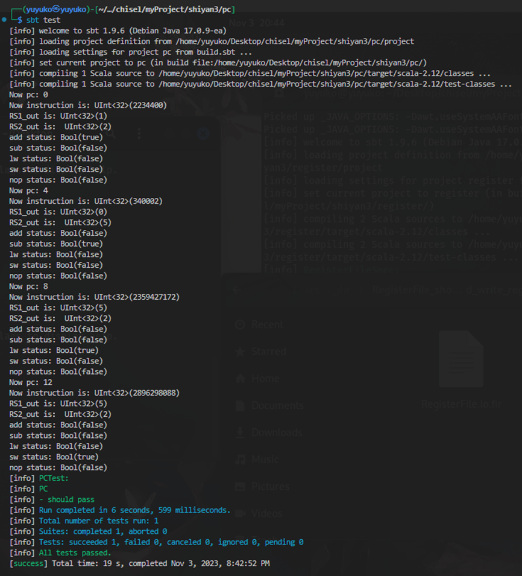
测试通过，从输出的提示信息可以看到结果均正确，能够正常的进行取指令和译码的操作。
波形图观察：
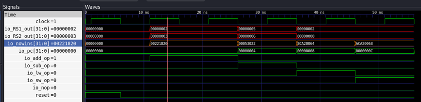
第一个时间周期中，add_op为1，RS1_out=2,RS2_out=3，对应R2，R3两个读入数据的寄存器。
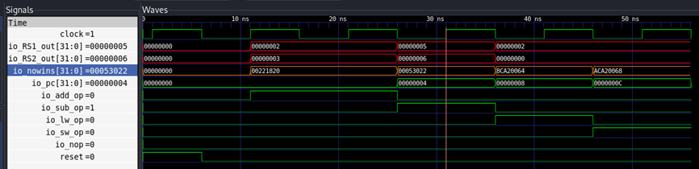
第二个时间周期，sub_op=1,RS1_out=5, RS2_out=6,对应R5，R6两个读入数据的寄存器。
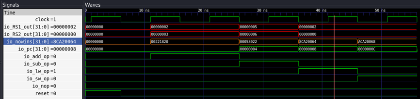
第三个时间周期，lw_op=1，RS1_out=2，对应读取寄存器为R2。
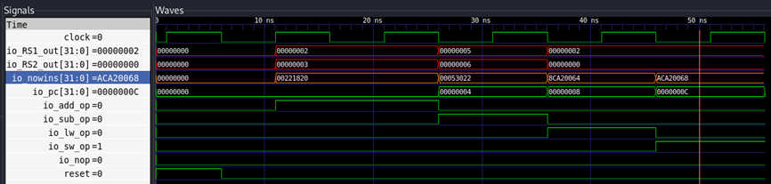
第四个时间周期，sw_op=1,RS1_out=2，对应写入的源寄存器为R2。
3、特别说明 最后要特别进行一点说明是，由于当时做实验的时候对于指令的格式理解与真实指令有误差，本文中构造的mips机器码并非真实mips指令对应的机器码。具体错误体现在：
真实mips指令和机器码的对应关系如下：
指令中的寄存器顺序是rd，rs，rt， 而机器码中，从左到右相关寄存器的顺序为rs，rt，rd
以add指令为例，add r1, r2, r3，在机器码中的寄存器顺序就应该是r2，r3，r1.
而在本文构造中，上述格式的指令机器码构造的顺序是r1，r2，r3，即完全按照指令中排列顺序构造，如果在真实环境下运行将会产生寄存器错位导致结果错误的情况。